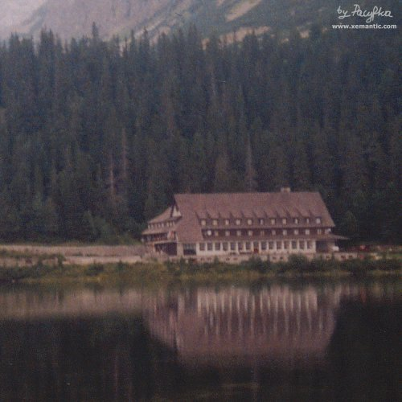

|
|
|
 |
|
|

|
|
|
|
|
|
Piękny budynek w stylu alpejskim oferuje noclegi w pokojach
o dwóch standardach: hotelowym i turystycznym. Generalnie
miejsce to jest nastawione na bardziej majętnych gości.
Obecnie poddasze, na którym kiedyś turyści spali na podłodze za niższą
opłatą, nie jest już udostępniane.
W eleganckiej restauracji sprzedawanie wrzątku
nie jest zasadą, ale jak się trafi na niski ruch i
dobry humor pań, można je o to poprosić.
W barze organizowane są występy folklorystyczne.
Przed hotelem stoją budki oferujące jedzenie typu fast-food,
napoje, słodycze i różne inne rzeczy.
|
|
| Historia |
|
|
|
# W PRZYGOTOWANIU
|
|
| |
|
Nazwa polska: Schronisko przy Popradzkim Stawie, Chata Kapitana Morawki
Nazwa słowacka: Chata pri Popradskom plese, Chata Kapitana Moravku
Wysokość: 1500 m n.p.m.
Położenie: Dolina Mięguszowiecka (Mengusovská dolina)
Czynne: cały rok
Ilość miejsc noclegowych: 120
Telefon: +421/(0)52/449 21 77
Adres: Chata pri Popradskom plese, 059 85 Štrbské Pleso, Słowacja
Strona www: www.horskyhotel.sk
Cena: (lato 2005) łóżko w pokoju turystycznym (7-10-osobowym) 380Sk
w pokoju hotelowym bez łazienki 400 Sk
w pokoju hotelowym z WC i prysznicem 700 Sk
HOTEL NIE UDZIELA NOCLEGÓW AWARYJNYCH NA PODDASZU
Dojście: Szlak czerwony ze Szczyrbskiego Jeziora (Štrbské Pleso);
szlak niebieski (asfaltówka) z przystanku elektriczki i parkingu Popradskie Pleso
Punkt wyjścia na: Rysy, Koprowy Wierch
Trasy turystyczne:
szlak do Chaty - dla początkująch turystów
szlak na Hińczowe Stawy - dla zaawansowanych turystów
szlak na Koprowy Wierch - dla doświadczonych turystów
szlak na Rysy - dla doświadczonych turystów
|

Strona zaakceptowana i skatalogowana w

|
|


{kind=link}